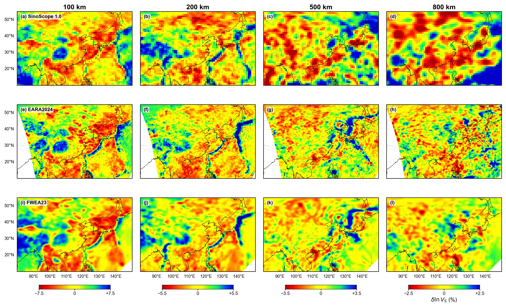
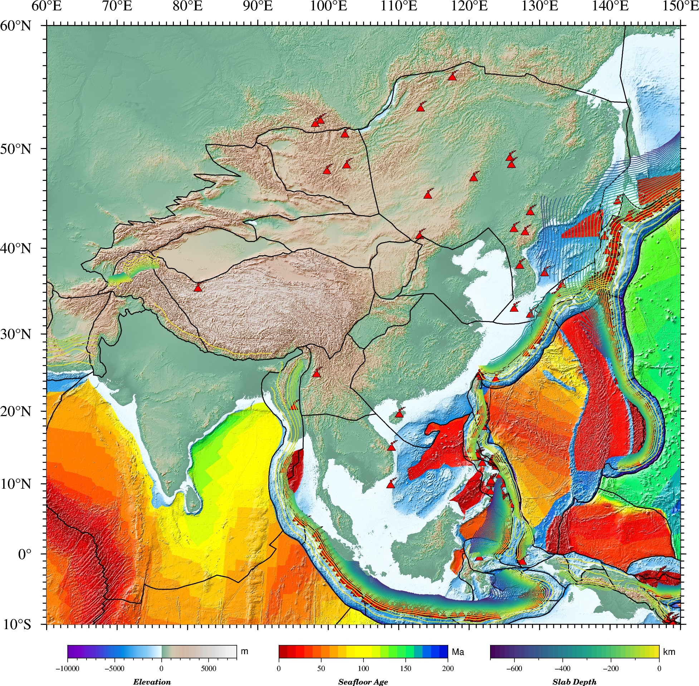
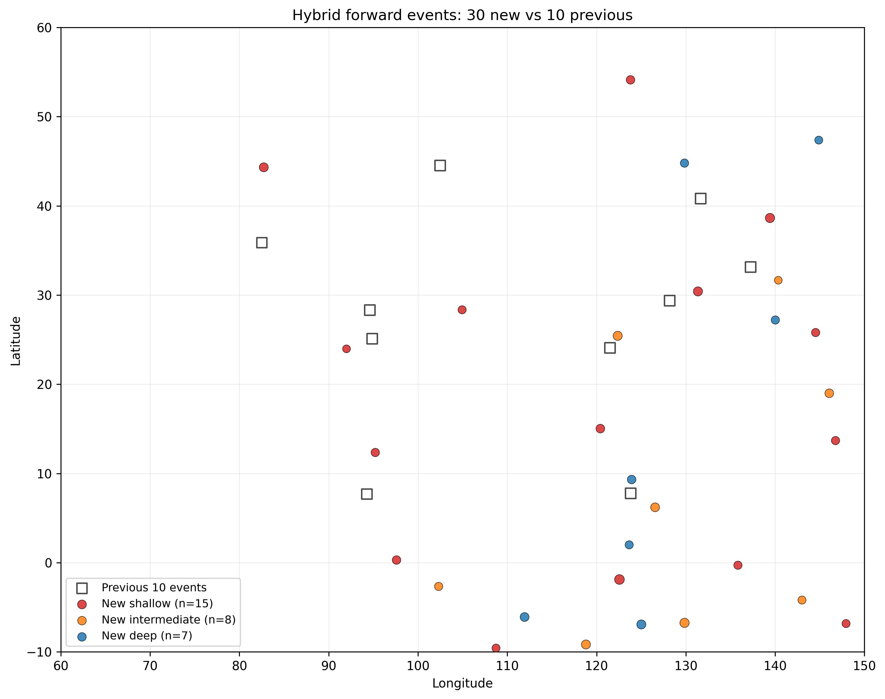
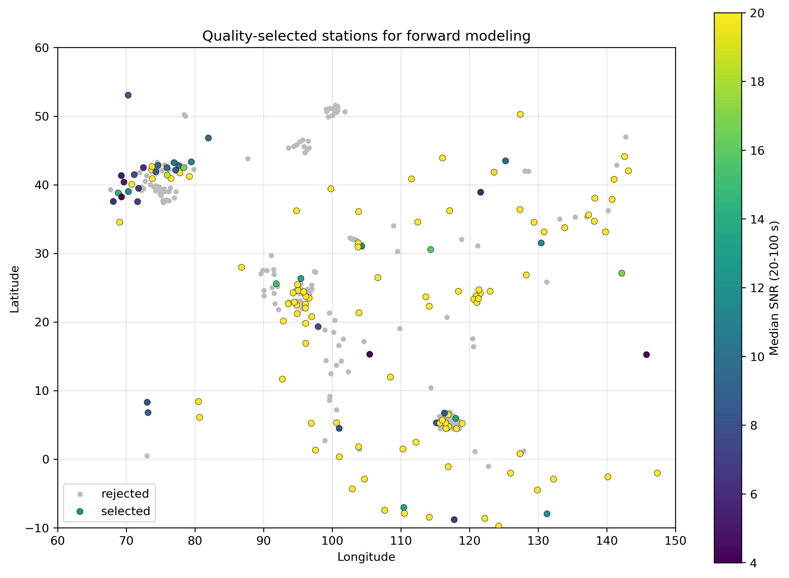
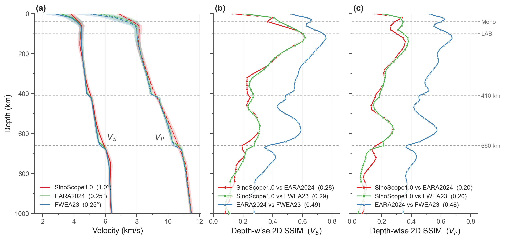
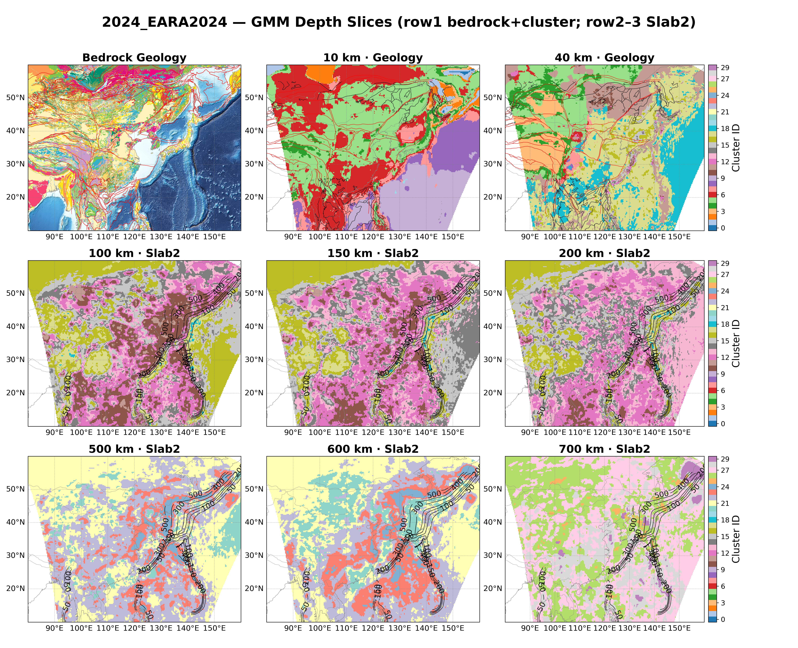
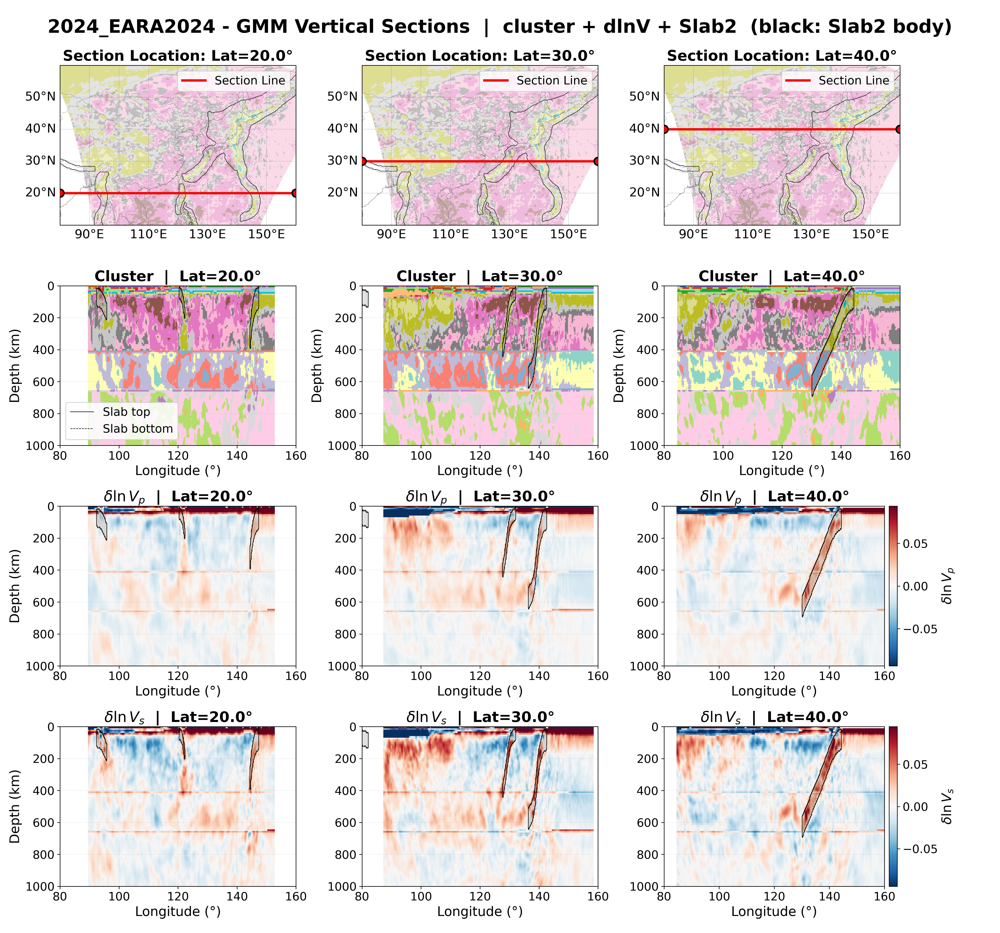
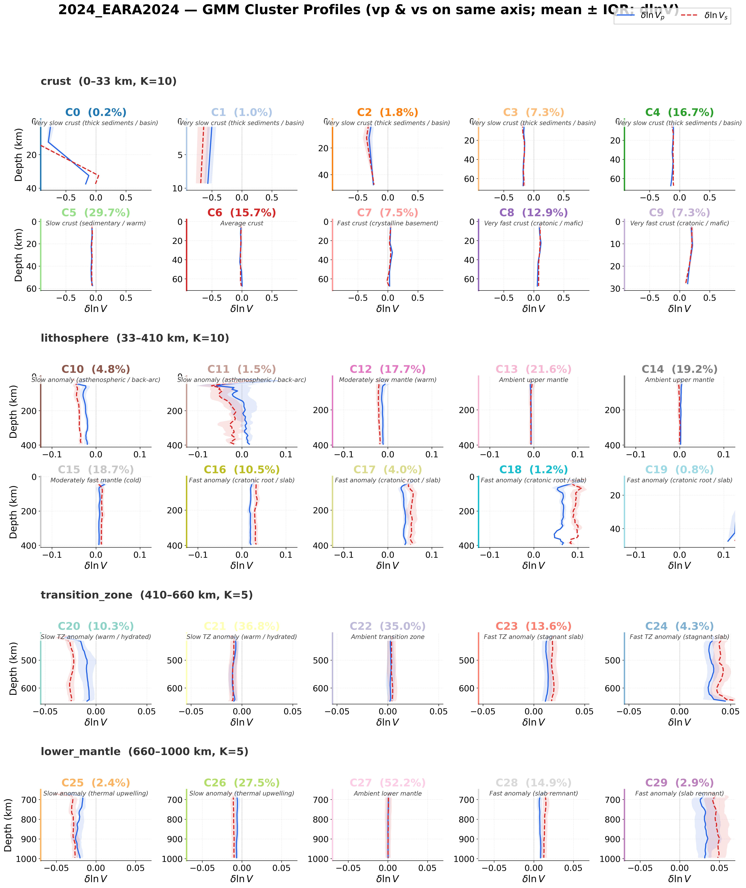
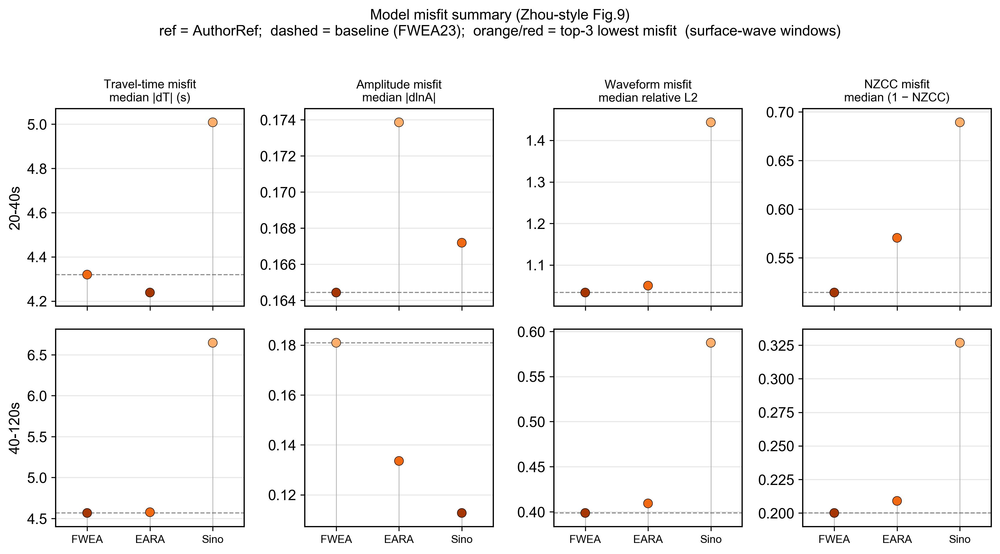

公开模型 · 可重复对比
东亚岩石圈—地幔地震速度模型
对已发表三维速度模型使用同一套模型空间度量，并用谱元法正演检验地幔部分。
- 01收集并标准化为 NetCDF
- 02扰动域结构相似性
- 03深度分带聚类，叠绘 Slab2
- 04SPECFEM3D Globe 正演
评估对象
定量结果针对 SinoScope1.0、EARA2024 和 FWEA23。三者均为近年伴随法全波形反演模型，覆盖范围高度重合。对比在扣除横向平均后的扰动域中进行，避免不同一维参考模型主导评分。正演在 Moho 以上统一为 CRUST1.0。
与观测波形的独立评分、模型融合和伴随反演仍在进行，不作为本站结论。

现阶段认识（仅地幔）
- 三模型在岩石圈（约 80–200 km）最接近。该带 Vs 的 SSIM 为 0.55–0.72，地壳、过渡带及 660 km 以下依次降低。
- 统一到 1.0° 网格后，EARA2024 与 FWEA23 的 Vs 深度平均 SSIM 为 0.49，约为二者各自与 SinoScope1.0 比较值（约 0.28）的 1.7 倍。
- 每个模型分出 30 个速度簇。EARA2024 与 FWEA23 在 100–200 km 及过渡带的高速簇与 Slab2 重合；SinoScope1.0 保留同一套大尺度分区，边界更软。
- FWEA23 与 EARA2024 的合成波形接近作者参考；SinoScope1.0 在 20–40 s 面波段偏差更大。地壳已固定为 CRUST1.0，该结论只对 Moho 以下成立。
研究区与数据
研究区覆盖东亚及西太平洋邻区，包括青藏高原、华北—东北、华南、东南亚，以及日本海沟—伊豆—小笠原—马里亚纳俯冲系统。

波形检验测试集取自 GCMT / GCMT3D 的 30 个事件。公开 FDSN 台站经三分量完整、记录时长不少于 1800 s、20–100 s 频段信噪比不小于 4 筛选后，入选正演台站 135 个（独立台站 417 个，有效测量 2161 条，通过率约 69%）。


相对 FWEA23 所用约 814 个中国省级台站，公开 FDSN 在中国大陆内部明显偏少。解释评分时不能把覆盖缺口读成模型优劣。
模型库
共收集 2018–2026 年发表的 24 个岩石圈—上地幔模型。只有三个准全域 FWI 模型能进入同一套相似性矩阵；区域和局部模型仅作对照。
表 1 定量对比所用的三个模型
| 属性 | SinoScope1.0 | EARA2024 | FWEA23 |
|---|---|---|---|
| 文献 | Ma et al., 2022 | Xi et al., 2024 | Liu et al., 2024 |
| 水平分辨率 | ~1.0° | ~0.25° | ~0.25° |
| 深度 (km) | 0–2800 | 0–1000 | 0–1000 |
| 地震 / 台站 | 410 / 2427 | 142 / ~2000 | 141 / 4640 |
| 最短周期 (s) | 30 | 8 | 15 |
| 失配函数 | 时-频域相位 | 加权 NZCC | 分震相归一化互相关 |
| 径向各向异性 | 否 | ρ, VC, VSV, VSH, η | 仅上部 220 km |
| 初始模型 | CSEM | FWEA18 + EARA2014 + S362ANI | FWEA18 + EARA2014 |
| 分发形式 | 规则网格 NetCDF | 规则网格 NetCDF | NetCDF + 原生 GLL |
表 S1 模型目录（按年份）
| 模型 | 年份 | 参数 | 深度 (km) | 覆盖 | 文献 |
|---|---|---|---|---|---|
| CSEM_Japan | 2018 | Vs | 0–350 | 日本及邻区 | Fichtner et al., 2018 |
| FWEA18 | 2018 | Vp, Vs | 0–800 | 东亚 | Tao et al., 2018 |
| TP2019 | 2020 | Vs | 25–700 | 青藏高原 | Xiao et al., 2020 |
| KEA20 | 2021 | Vs | 25–250 | 朝鲜半岛—东亚 | Witek et al., 2021 |
| SWChinaCVM-1.0 | 2021 | Vp, Vs | 0–50 | 西南中国 | Liu et al., 2021 |
| SinoScope1.0 | 2022 | Vp, Vs | 0–2800 | 中国及邻区 | Ma et al., 2022 |
| USTClitho2.0 | 2022 | Vp, Vs | 0–150 | 中国大陆 | Han et al., 2022 |
| SASSY21 | 2022 | Vs | 150–600 | 东南亚 | Wehner et al., 2022 |
| CSRM1.0 | 2023 | Vp, Vs | 0–100 | 中国大陆 | Wen and Yu, 2023 |
| SWChinaCVM-2.0 | 2023 | Vp, Vs | 0–50 | 西南中国 | Liu et al., 2023 |
| ASIA2024 | 2024 | Vp, Vs | 0–690 | 亚洲 | Dou et al., 2024 |
| EARA2024 | 2024 | Vp, Vs | 0–1000 | 东亚—西北太平洋 | Xi et al., 2024 |
| FWEA23 | 2024 | Vp, Vs | 0–1000 | 东亚 | Liu et al., 2024 |
| CSES_VM1.0 | 2024 | Vp, Vs | 0–75 | 南北地震带 | Wu et al., 2024 |
| Gao_NEChina | 2025 | Vp | 0–2500 | 东北 | Gao et al., 2025 |
| Han_NEChina | 2025 | Vs | 0–2500 | 东北 | Han et al., 2025 |
Chen_SChinaSea、Cao_SETibet、Kumar_Pamir、Wu_NETibet 等局部模型只作对照。数据来自 IRIS EMC 与论文补充材料。本站不提供 NetCDF 或 GLL 下载。
结构相似性
在统一 1.0° 网格和扰动场 δlnV 上逐层计算 SSIM（Wang et al., 2004）。相位随机化零假设基线约 0.05–0.07。横向平均剖面的一维 SSIM 为 0.90–0.99，分歧在横向图案而不在背景梯度。

表 2 深度平均 SSIM ± 标准差
| 模型对 | Vs SSIM | Vs 结构项 | Vp SSIM | Vp 结构项 | 零假设 (Vs / Vp) |
|---|---|---|---|---|---|
| SinoScope1.0–EARA2024 | 0.276 ± 0.147 | 0.305 | 0.196 ± 0.089 | 0.224 | 0.054 / 0.067 |
| SinoScope1.0–FWEA23 | 0.288 ± 0.148 | 0.332 | 0.198 ± 0.106 | 0.233 | 0.056 / 0.071 |
| EARA2024–FWEA23 | 0.494 ± 0.153 | 0.521 | 0.482 ± 0.101 | 0.509 | 0.053 / 0.054 |
岩石圈（80–200 km）最接近，单层 Vs 峰值在 120 km（0.764 / 0.622 / 0.619）。地壳、200 km 以下及 660 km 以下依次降低。EARA2024–FWEA23 在 660 km 的单层突降，更可能来自相变面参数化差异，而不是真实结构对比。
速度簇
在地壳、岩石圈地幔、过渡带和下地幔四个深度带上，对 (δlnVp, δlnVs) 独立拟合高斯混合。分量数取构造先验 K = 10 / 10 / 5 / 5，不用 BIC 最小值。带内按平均 δlnVs 升序编号。地质界线与 Slab2 只作叠图，不计算符合度分数。
表 3 深度分层 GMM
| 模型 | 簇数 | 有效体元 | 轮廓系数 | 高置信度 |
|---|---|---|---|---|
| SinoScope1.0 | 30 | 4.08×10⁵ | 0.297 | 53.4% |
| EARA2024 | 30 | 5.81×10⁶ | 0.342 | 74.2% |
| FWEA23 | 30 | 7.64×10⁶ | 0.343 | 75.9% |



地壳带体积很小、集中在 0–10 km 的若干簇是振幅碎片，不解释为独立盆地。正文只讨论克拉通根、弧后低速、滞留板片和环境地幔等一级格局。
正演波形
三模型在同一套 SPECFEM3D Globe 网格上正演，CMTSOLUTION 与 STATIONS 相同。求解器先写地幔再写地壳，因此三次计算在 Moho 以上都使用 CRUST1.0，合成波形差异只反映地幔。频段为 20–40 s 和 40–120 s。当前指标比较的是合成波形与作者参考波形（AuthorRef），还不是观测记录。

表 5 相对 AuthorRef 的中位数指标（节选）
| 模型 | 频段 | 震相 | |dT| (s) | NZCC | 相对 L2 |
|---|---|---|---|---|---|
| FWEA23 | 20–40 s | P(Z) | 0.41 | 0.935 | 0.145 |
| EARA2024 | 20–40 s | P(Z) | 0.35 | 0.920 | 0.171 |
| SinoScope1.0 | 20–40 s | P(Z) | 2.68 | 0.714 | 0.592 |
| FWEA23 | 20–40 s | Rayleigh(Z) | 4.60 | 0.475 | 1.016 |
| EARA2024 | 20–40 s | Rayleigh(Z) | 4.71 | 0.415 | 1.084 |
| SinoScope1.0 | 20–40 s | Rayleigh(Z) | 5.47 | 0.303 | 1.571 |
| FWEA23 | 40–120 s | P(Z) | 0.67 | 0.978 | 0.047 |
| EARA2024 | 40–120 s | P(Z) | 0.42 | 0.979 | 0.052 |
| SinoScope1.0 | 40–120 s | P(Z) | 3.07 | 0.908 | 0.188 |
长周期体波窗口最稳定。SinoScope1.0 与另外两模型的差别主要出现在 20–40 s 面波段。模型空间 SSIM 排序不能直接当作观测波形的最终排名：AuthorRef 更接近 FWEA23，目前只有 FWEA23 有原生 GLL，且正演不含地壳 SSIM 所度量的那部分差异。
本页不提供向超算互联网提交作业。预计算图是当前正演记录。
方法要点
标准化
模型转为符合 CF 约定的 NetCDF，维度为 (latitude, longitude, depth)。速度单位 km/s，深度自地表向下为正。参数名：vp、vs、vpv、vph、vsv、vsh、rho、eta。三个核心模型已有原生 Vp 与 Vs，不使用 Brocher (2005) 或地幔比例补全。
扰动域与统一网格
δlnV = (V − V̄(z)) / V̄(z)，V̄ 为面积加权横向平均。所有模型对使用交集区域（约 10°–55°N，80°–150°E）、1.0° 网格和有效掩膜（逐层覆盖约 0.90）。若各对各取原生分辨率，矩阵内的 SSIM 将不可比。
SSIM
局部统计使用 σ = 2.0° 的高斯窗口，再按层厚加权。单独给出结构项，以免把纯振幅标定误读为图案变化。零假设保持功率谱、随机化相位（20 次，种子 42）。
聚类
特征为标准化后的 δlnVp 与 δlnVs。分带界线为 Moho、410 km 和 660 km。完整协方差 GMM 由 EM 估计。三模型使用同一组 K。BIC 只作诊断。
正演
SPECFEM3D Globe 在地幔赋值之后写入地壳。启用地壳模块会覆盖 Moho 以上节点。三次正演共用 CRUST1.0，残差才能归因到地幔。频段下限为 20 s。窗口目标为信噪比大于 4 且互相关大于 0.7。观测波形的 χT / χA / χF 及地理—分类加权（Zhou et al., 2021）留待后续工作。
引用与数据
请引用在审稿件。模型文件仍由原作者和 IRIS EMC 分发，本站不提供 NetCDF 或 GLL。
- 评估文稿：东亚岩石圈—地幔地震速度模型定量对比。中国科学：地球科学，审稿中。
- Ma J, Bunge H, Thrastarson S, Fichtner A, Herwaarden D van, Tian Y, Chang S, Liu T. 2022. Seismic full-waveform inversion of the crust-mantle structure beneath China and adjacent regions. J. Geophys. Res. Solid Earth, 127(9), e2022JB024957.
- Liu C, Banerjee R, Grand S P, Sandvol E, Mitra S, Liang X, Wei S. 2024. A high-resolution seismic velocity model for East Asia using full-waveform tomography. Earth Planet. Sci. Lett., 639, 118764.
- Xi Z, Chen M, Wei S S, Li J, Zhou T, Wang B, Kim Y. 2024. EARA2024: A radially anisotropic seismic velocity model for East Asia and the northwestern Pacific. Geophys. J. Int., 239(2), 914–935.
- Wang Z, Bovik A C, Sheikh H R, Simoncelli E P. 2004. Image quality assessment: from error visibility to structural similarity. IEEE Trans. Image Process., 13(4), 600–612.
- Zhou T, Li J, Xi Z, Chen M. 2021. Assessment of seismic tomographic models of the contiguous United States using spectral-element seismic waveforms. Geophys. J. Int., 228(2), 1392–1414.
- IRIS DMC, 2011. Data Services Products: EMC. https://ds.iris.edu/ds/products/emc/
图件来自评估文稿。